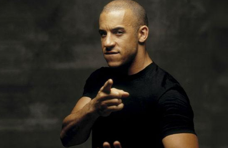

-
Paul Walker
In 1998, he starred in the comedy film Bao Li Bao Qi Chase. In 2001, he starred in the action film Fast and Furious. In 2002, he was nominated for the Most Breakthrough Actor Award at the 11th MTV Movie Awards for his role in the Fast and Furious. In 2006, he starred in the movie "The Great Adventure to the South Pole". In 2009, he was nominated for Best Actor in an Action/Adventure Film at the 11th Teen Choice Awards for his role in the film Race. In 2011, she starred in the film Fast Five. In 2013, the film Fast and Furious 6 was released.
-

Vin Diesel
In 2006, the film Fast and Furious: Tokyo Drift was released. In 2009, the film "Fast and Furious 4" starring him was released in China. In 2011, the movie Fast and Furious 5 was released in China, for which he was nominated for the 13th Teen Choice Award - Best Action Movie Actor. In 2013, the film Fast & Furious 6 was released. In 2015, the movie "Furious 7" was released. In the same year, the film Fast and Furious 8 was released. In 2021, the film "Fast and Furious 9" starring him was released. [10]